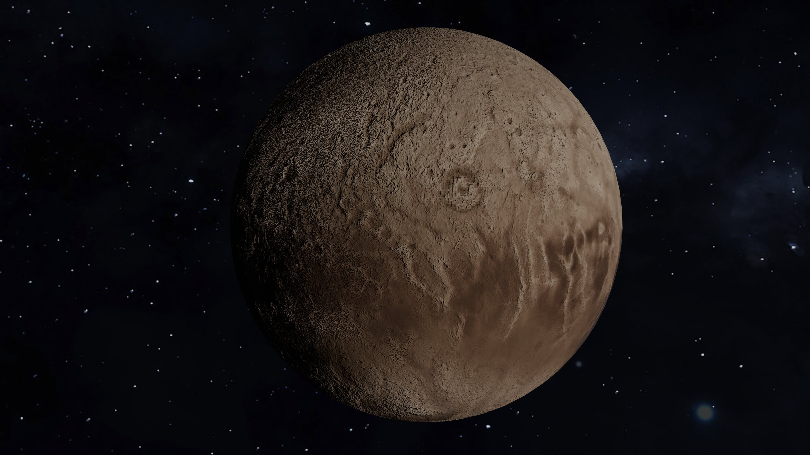

|  |
|
Plutón está catalogado como un planeta enano. En 2006, Plutón fue categorizado con otros tres objetos en el sistema solar que son aproximadamente del mismo tamaño que Plutón: Ceres, Makemake y Eris. Estos objetos, junto con Plutón, son mucho más pequeños que los "otros" planetas. Plutón es un planeta enano que se encuentra en el cinturón de Kuiper. Es un área llena de objetos helados y otros planetas enanos en el borde de nuestro sistema solar. Debido a que Plutón es el objeto más grande conocido en esta región, algunos lo llaman "Rey del Cinturón de Kuiper". El ancho de Plutón equivale solamente a la mitad de los Estados Unidos. Caronte tiene aproximadamente la mitad del tamaño de Plutón. En comparación con su planeta, ¡Caronte es la luna más grande del sistema solar! |